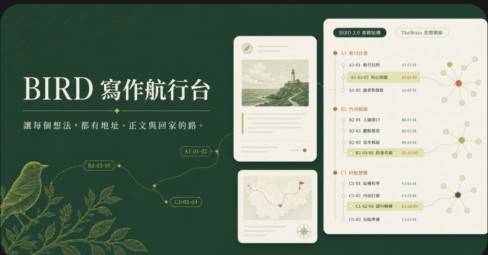

《瑜伽師地論》
超大型經論需要穩定層級、主題索引，以及隨時回到原文的入口。

我們擁有一些工具，監看牠的飛行。這關乎對現代全社會的探索。
尼克拉斯・魯曼 Niklas Luhmann（轉述，待核原文）
從三種尺度開始
超大型經論需要穩定層級、主題索引，以及隨時回到原文的入口。
寫得超慢，不等於沒有前進。問題是能否看見每一張卡位於哪裡、寫到哪裡。
短篇經典同樣需要章句定位、關鍵字索引與跨篇閱讀路徑。
每一張卡同時回答四個問題：放在哪裡、它是什麼、通往哪裡、如何再次打開。
書的結構地址。部、章、節、項，都是可追蹤的寫作位置。
全系統 / 第三部 / 3.4 / 3.4.D.B
書的知識元素，以 Weight、Type、Keyword、Alias 組成雙軸索引。
I4 · Concept · 卡片盒 · Zettelkasten
書的交叉路徑。在 TheBrain 中以 Jump 串起跨章的思想運動。
馬爾薩斯 → 達爾文 → TARS → 半人馬
永久入口。保留由工具產生的 TheBrain Deep Link，不猜測、不改寫。
brain://...
兩套方法，不是二選一
Fact、Index、Relation、Encyclopedia，讓一則暫時念頭成為可重用的永久筆記。
Book、Index、Route、Deep Link，讓永久筆記進入章節、建立路徑，最後成為書稿。
Excel 負責全貌與欄位，Plex 顯示部章節項，Type 固定結構身分，Tag 推進寫作狀態，Note 承載真正的書稿。